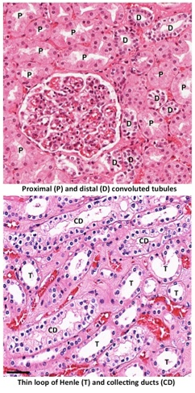

Filtrado procesado en el túbulo proximal
Principal sitio de reabsorción activa de glucosa, aminoácidos y el 65% de agua y sodio esenciales para la homeostasis.
Dividida en rama descendente permeable al agua y ascendente para solutos.
Utiliza el mecanismo de contracorriente para establecer el gradiente osmótico medular necesario para concentrar la orina.